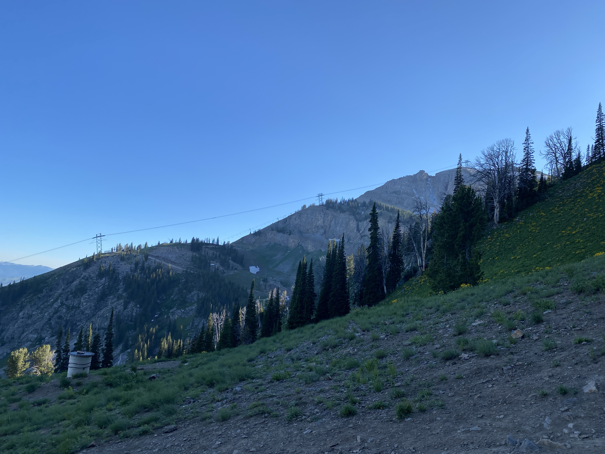
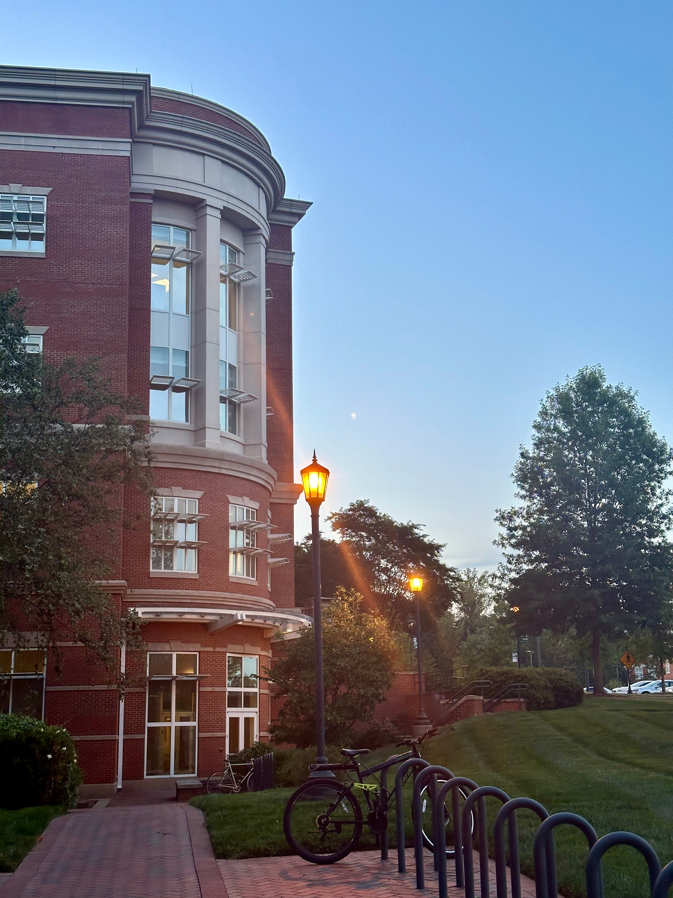
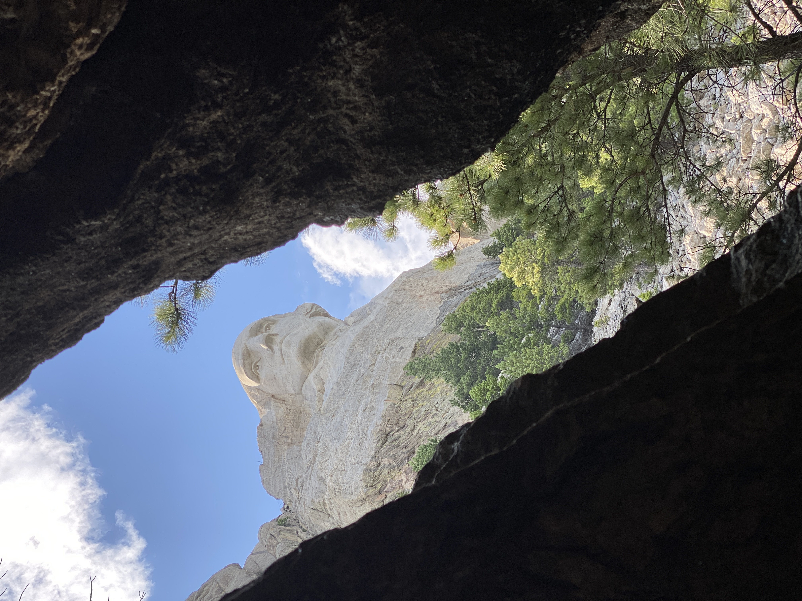
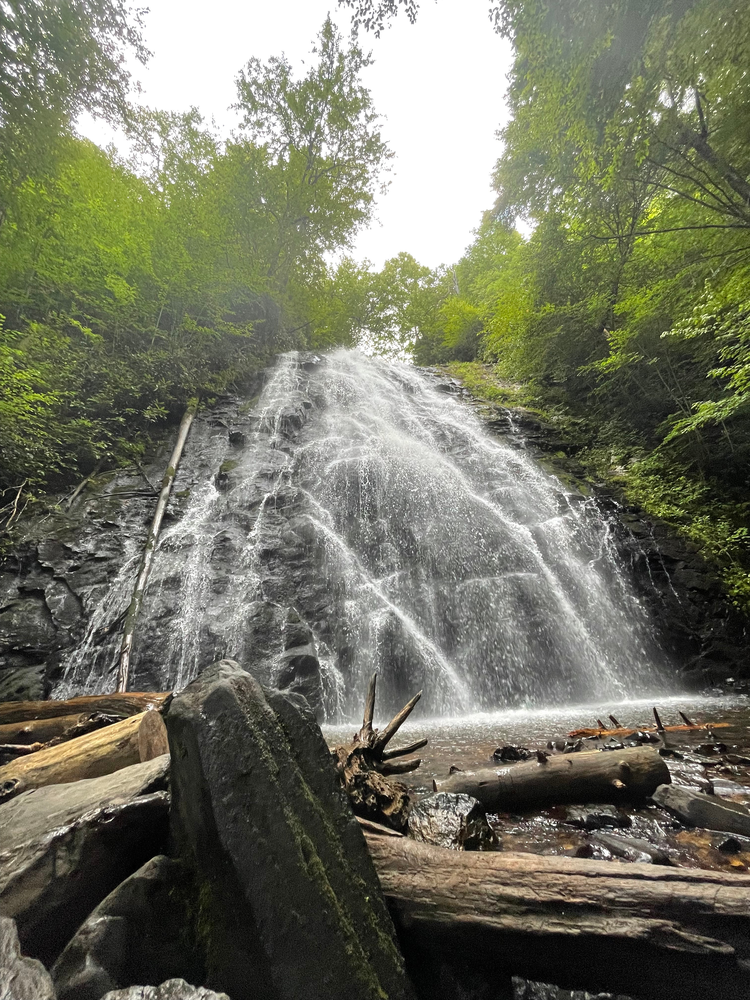
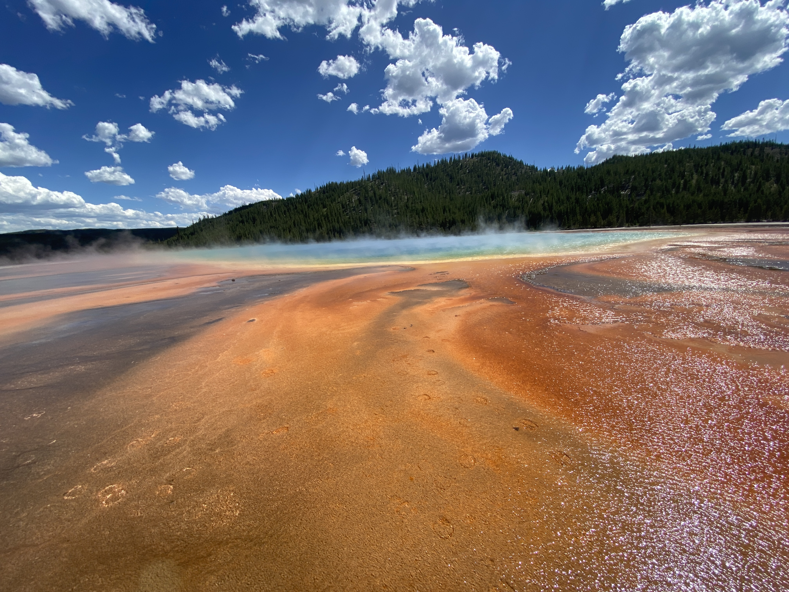
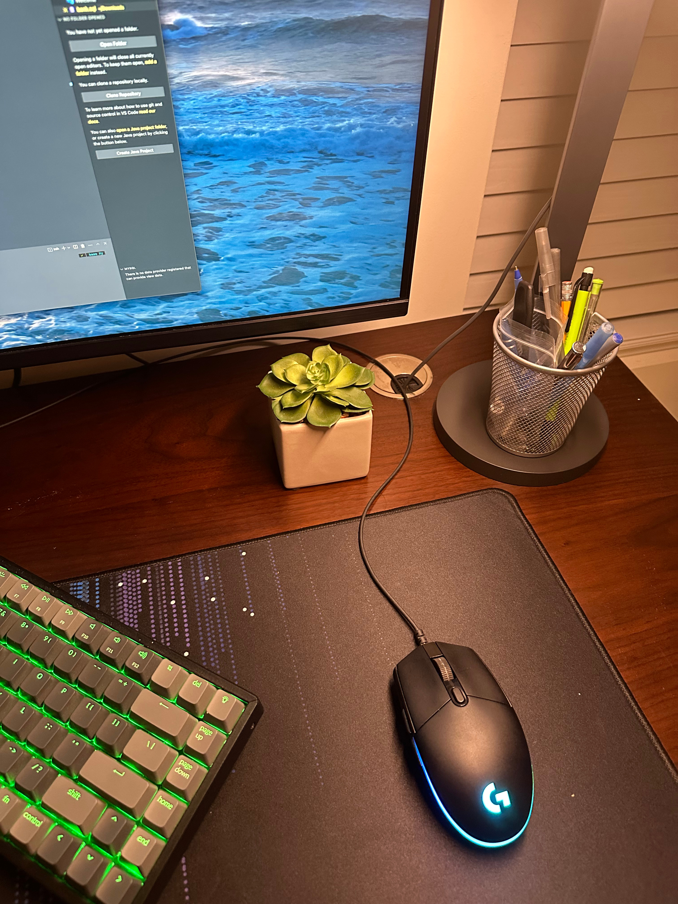

This is my hobby site, where I share my passion for photography.
At Focal Frame, I strive to capture the world's beauty through my
lens, freezing moments in time and weaving stories through
photographs.
Whether it's the breathtaking landscapes, candid portraits, or
intricate details, each click of my camera represents my deep
appreciation for the world's wonders. Join me on this visual adventure
as I showcase my best work, share photography tips, and narrate the
stories behind each captivating image.
On a Mountain
About Me
I'm a passionate photographer dedicated to capturing the beauty of the
world. Focal Frame is my platform where I can showcase my passion.
Focal Frame serves as my canvas, a platform where I can showcase my
passion for photography and share my creative vision with the world.
It's not just a website; it's my love for the art of capturing
moments. This platform has given me the opportunity to express my love
for photography.

Grand Teton National Park
Featured Photos
These are some photos that I am proud of.

EPIC Building, UNCC

Mt.Rushmore

Fall
My Trip to Yellowstone
I had the opportunity to visit Yellowstone National Park during the
summer of 2022. It was a breathtaking experience exploring the park's
geothermal wonders, observing diverse wildlife, and witnessing the
mesmerizing natural beauty, made me fall in love with photography.
During my trip, I had the chance to marvel at and photograph iconic
attractions such as Old Faithful, Grand Prismatic Spring, and the
Yellowstone Grand Canyon.

Grand Prismatic Spring, Yellowstone
Mastering the Craft
Mastering the art of photography is a continuous learning process. I
invest time in understanding camera techniques, experimenting with
different compositions, and post-processing to enhance the visual
impact of my photographs. Through dedication and practice, I strive to
refine my skills and create captivating images that resonate with
viewers.
Photography, for me, is a profound experience where every click
captures an emotion, a story, or a fleeting moment in time. It's not
just about freezing memories; it's about weaving narratives through
visuals.

Picture of Lamp
Why I Love Photography
Photography allows me to appreciate the world's beauty in a unique
way. It enables me to capture fleeting moments, emotions, and the
essence of life. The thrill of finding the perfect frame, the
satisfaction of a well-composed shot, and the joy of sharing my work
with others drive my passion for photography. It's not just a hobby;
it's a creative outlet that enriches my life and connects me with a
community of fellow photography enthusiasts.
Photography isn't merely about clicking pictures; it's a creative
outlet that enriches my life. It enables me to appreciate the
intricacies of the world, from the play of light on landscapes to the
unspoken emotions etched on people's faces